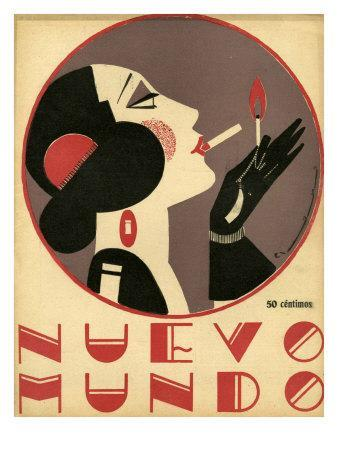

The Art Deco style manifested across the spectrum of the visual arts: from architecture, painting, and sculpture to the graphic and decorative arts. While Art Deco practitioners were often paying homage to modernist influences such as Cubism, De Stijl, and Futurism, the references were indirect; it was as though they were taking the end results of a few decades of distilling compositions to the most basic forms and inventing a new style that could be visually pleasing but not intellectually threatening. The Art Deco style originated in Paris, but has influenced architecture and culture as a whole. Art Deco works are symmetrical, geometric, streamlined, often simple, and pleasing to the eye. This style is in contrast to avant-garde art of the period, which challenged everyday viewers to find meaning and beauty in what were often unapologetically anti-traditional images and forms.Source
What makes Art Deco capture the imagination with such ease is its broadness. It’s essentially not just a single style, but a mosaic of various and even contradictory styles joining forces to create something that was then very new and exciting. Its major characteristics include: